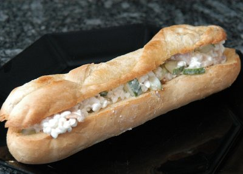

| Zutaten für 4 Personen: | |
| 4 | Frischback Parisettes |
| 2 El | Butter |
| 1 El | scharfer Senf |
| 3 El | Weissweinessig |
| 1 El | Sonnenblumenöl |
| 1 Tl | Zucker |
| 1/4 Tl | Salz |
| 1 | Gurke (400g) |
| 2 El | Dill |
| 400g | Hüttenkäse |
| 300g | geräucherte Forellenfilets |
| Pfeffer | |
| Dill | |
Vor- und zubereiten: ca. 35 Minuten
Aufbacken: ca. 8 Minuten
Von den Parisettes längs einen Deckel (ca. 1/3) abschneiden.
Parisettes aushöhlen, die Böden innen und die Deckel oben mit Butter oder Margarine bestreichen, auf ein mit Backpapier belegtes Backblech legen.
Aufbacken: ca. 8 Minuten in der Mitte des auf 220°C vorgeheizten Ofens.
Herausnehmen, auf einem Gitter auskühlen.
Alle Zutaten bis und mit Salz gut verrühren.
Die Gurke halbieren und entkernen. In Streifen schneiden.
Gurke und Dill in die Sauce einrühren und zugedeckt 15 Minuten ziehen lassen.
Den Hüttenkäse und den Fisch beigeben, würzen.
Parisettes damit füllen, garnieren, mit den Deckeln sofort servieren.
Betty Bossi Zeitung, Nr. 7, August 2000
Hat im August 2012 ausgezeichnet geschmeckt. RE
@LINKBACK_TAG@ @WAKELOCK@